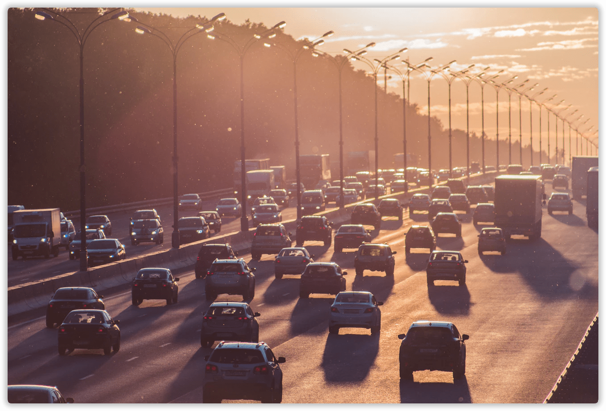
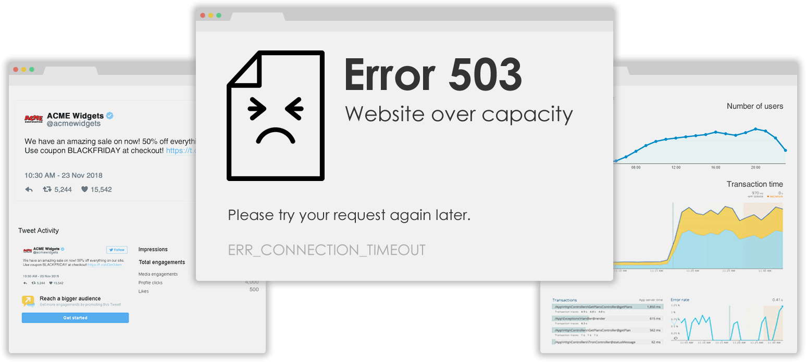
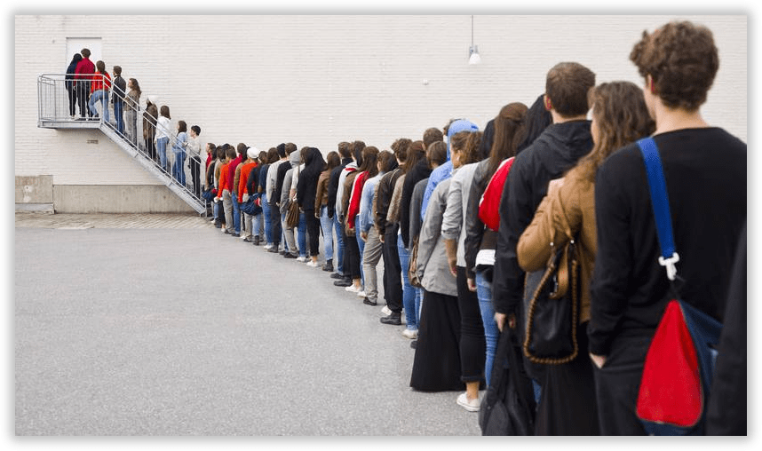

Popularity is great, until your website hits a bottleneck and goes offline. Our system will automatically start holding users in a virtual waiting room until capacity is available for them.

Downtime is avoidable
That's right. Avoidable. You can either scale your infrastructure to handle a spike, or use something creative to trickle those users through to your site at a consistent rate instead of being down for all of them.


Queue your users
Instead of your site being offline until traffic subsudes, our system allows you to put users over a defined threshold into a waiting room. As visitors complete their sessions, new users will be allowed through from the front of the queue.